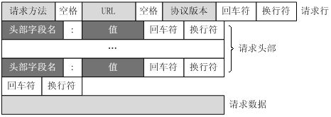

1. WebSpider Basics¶
1.1. 什么是爬虫¶
例子:
搜索引擎
数据分析
咨询网站
web crawler/spider, 自动模拟网页请求抓取数据
通用爬虫: 搜索引擎抓取系统的重要组成部分, 主要用于将互联网上的网页下载到本地, 形成镜像备份
聚焦爬虫: 面向特定需求, 只抓取网页的指定部分
1.2. HTTP/HTTPS¶
HTTP: HyperText Transfer Protocol, 超文本传输协议, 用于发布和接收 HTML 网页; 服务器默认端口为 80
HTTPS: HTTP over Secure Socket Layer, 在 HTTP 的基础上加入了 SSL 层; 服务器默认端口是 443
{kind=link}
1.2.1. request methods¶
GET
POST
HEAD
PUT
DELETE
TRACE
OPTIONS
CONNECT
PATCH
1.2.2. 常见请求头¶
Host |
接收请求的服务器地址 |
|---|---|
User-Agent |
发送请求的应用程序名称 爬虫里需要伪造 |
Content-Type |
也叫互联网媒体类型 (Internet Media Type) 或者 MIME 类型 在 HTTP 协议消息头中用来表示具体请求中的媒体类型信息 |
Referer |
表明当前请求是从哪个页面发过来的 一般也用于反爬虫技术; 如果不是从指定页面过来的就不响应 |
Cookie |
记录一些请求的状态 例如爬虫访问需要登陆的网站就需要发送 cookie |
Connection |
指定与连接相关的属性, 如 Connection:Keep-Alive |
Accept |
请求报头域, 用于指定客户端可接受哪些类型的信息 |
Accept-Charset |
通知服务端可以发送的编码格式 |
Accept-Encoding |
通知服务端可以发送的数据压缩格式 |
Accept-Language |
通知服务端可以发送的语言 |
例
POST /index.php HTTP/1.1 请求行
Host: localhost
User-Agent: Mozilla/5.0 (Windows NT 5.1; rv:10.0.2) Gecko/20100101 Firefox/10.0.2 请求头
Accept: text/html,application/xhtml+xml,application/xml;q=0.9,/;q=0.8
Accept-Language: zh-cn,zh;q=0.5
Accept-Encoding: gzip, deflate
Connection: keep-alive
Referer: http://localhost/
Content-Length: 25
Content-Type: application/x-www-form-urlencoded
空行
username=aa&password=1234 请求数据
Content-Type 和 POST 提交数据方式的关系:
Content-Type |
提交数据的方式 |
|---|---|
application/x-www-form-urlencoded |
表单数据 |
multipart/form-data |
表单文件上传 |
application/json |
序列化 JSON 数据 |
text/xml |
XML 数据 |
1.2.3. 常见响应状态码¶
状态码 |
说明 |
|---|---|
200 |
响应成功 |
301 |
永久重定向 |
302 |
临时重定向; 如重定向到登陆页面 |
400 |
请求的 URL 在服务器上找不到 |
403 |
服务器拒绝访问, 权限不够 |
500 |
服务器内部错误 |
1.2.4. 常见响应头¶
Date: 标识响应产生的时间
Last-Modified: 指定资源的最后修改时间
Content-Encoding: 指定响应内容的编码
Server: 包含服务器的信息, 比如名称, 版本号等
Content-Type: 文档类型, 指定返回的数据类型是什么, 如 text/html 代表返回 HTML 文档, application/x-javascript 则代表返回 JavaScript 文件, image/jpeg 则代表返回图片
Set-Cookie: 设置 Cookies; 响应头中的 Set-Cookie 告诉浏览器需要将此内容放在 Cookies 中, 下次请求携带 Cookies 请求
Expires: 指定响应的过期时间, 可以使代理服务器或浏览器将加载的内容更新到缓存中; 如果再次访问时, 就可以直接从缓存中加载, 降低服务器负载, 缩短加载时间
1.3. URI & URL¶
Uniform Resource Identifier, 统一资源标志符; Uniform Resource Locator, 统一资源定位符
URL 是 URI 的子集; URI 还包括一个子类叫作 URN, Universal Resource Name, 即统一资源名称; URN 只命名资源而不指定如何定位资源, 比如 urn:isbn:0451450523 指定了一本书的 ISBN, 可以唯一标识这本书, 但是没有指定到哪里定位这本书
1.3.1. 标准格式¶
[schema]://[host]:[port]/[path]?[query]#[fragment]
schema: 传送协议
层级URL标记符号 (为[//],固定不变)
authority: 访问资源需要的凭证信息 (可省略)
host: 服务器, (通常为域名, 有时为IP地址)
port: 端口号, (以数字方式表示, 若为默认值可省略)
path: 路径, (以 “/” 字符区别路径中的每一个目录名称)
query: 查询, (GET模式的窗体参数, 以 “?” 字符为起点, 每个参数以 “&” 隔开, 再以 “=” 分开参数名称与数据, 通常以UTF8的URL编码, 避开字符冲突的问题)
fragment: 片段, 以 “#” 字符为起点
1.3.2. 完整格式¶
[协议类型]://[访问资源需要的凭证信息]@[服务器地址]:[端口号]/[资源层级UNIX文件路径][文件名]?[查询]#[片段ID]
scheme:[//authority]path[?query][#fragment]
1.4. Session & Cookies¶
HTTP 的 无状态 是指 HTTP 协议对事务处理没有记忆能力, 即服务器不知道客户端是什么状态
向服务器发送请求后, 服务器解析请求, 然后返回对应的响应; 服务器负责完成这个过程, 而且这个过程是完全独立的, 服务器不会记录前后状态的变化, 也就是缺少状态记录
这意味着如果后续需要处理前面的信息, 则必须重传, 这导致需要额外传递一些前面的重复请求, 才能获取后续响应
为了保持前后状态, 需要用到 session 和 cookies
1.4.1. Session 在服务端保存用户的会话信息¶
会话对象用来存储特定用户会话所需的属性及配置信息
当用户在应用程序的 Web 页之间跳转时, 存储在会话对象中的变量将不会丢失
服务器会自动创建会话对象; 当会话过期或被放弃后, 服务器将终止该会话
1.4.2. Cookies 在客户端保存登录的凭证¶
Cookies 指某些网站为了辨别用户身份, 进行会话跟踪而存储在用户本地终端上的数据

当客户端第一次请求服务器时, 服务器会返回一个响应头中带有 Set-Cookie 字段的响应给客户端, 用来标记是哪一个用户, 客户端浏览器会把 Cookies 保存起来
当浏览器下一次再请求该网站时, 浏览器会把此 Cookies 放到请求头一起提交给服务器, Cookies 携带了会话 ID 信息
服务器检查该 Cookies 即可找到对应的会话是什么, 然后再判断会话来以此来辨认用户状态
1.4.3. Cookies 属性¶
Name: 即该 Cookie 的名称； Cookie 一旦创建, 名称便不可更改
Value: 即该 Cookie 的值; 如果值为 Unicode 字符, 需要为字符编码; 如果值为二进制数据, 则需要使用 BASE64 编码
Max Age: 即该 Cookie 失效的时间, 单位秒, 也常和 Expires 一起使用, 通过它可以计算出其有效时间; Max Age 如果为正数, 则该 Cookie 在 Max Age 秒之后失效; 如果为负数, 则关闭浏览器时 Cookie 即失效, 浏览器也不会以任何形式保存该 Cookie
Path: 即该 Cookie 的使用路径。如果设置为 /path/, 则只有路径为 /path/ 的页面可以访问该 Cookie; 如果设置为 /, 则本域名下的所有页面都可以访问该 Cookie
Domain: 即可以访问该 Cookie 的域名; 例如如果设置为 .zhihu.com, 则所有以 zhihu.com 结尾的域名都可以访问该 Cookie
Size: 即此 Cookie 的大小
HTTP: 即 Cookie 的 httponly 属性; 若此属性为 true, 则只有在 HTTP Headers 中会带有此 Cookie 的信息, 而不能通过 document.cookie 来访问此 Cookie
Secure: 即该 Cookie 是否仅被使用安全协议传输; 安全协议有 HTTPS, SSL 等, 在网络上传输数据之前先将数据加密; 默认为 false
1.5. Proxy server¶
为了避免同一个 IP 访问过于频繁, 使用代理伪装 IP
代理服务器, 代理网络用户去取得网络信息
1.5.1. 分类¶
根据协议区分:
FTP: 主要用于访问 FTP 服务器, 一般有上传, 下载以及缓存功能, 端口一般为 21, 2121 等
HTTP: 主要用于访问网页, 一般有内容过滤和缓存功能, 端口一般为 80, 8080, 3128 等
SSL/TLS: 主要用于访问加密网站, 一般有 SSL 或 TLS 加密功能 (最高支持 128 位加密强度), 端口一般为 443
RTSP: 主要用于 Realplayer 访问 Real 流媒体服务器, 一般有缓存功能, 端口一般为 554
Telnet: 主要用于 telnet 远程控制 (黑客入侵计算机时常用于隐藏身份), 端口一般为 23
POP3/SMTP: 主要用于 POP3/SMTP 方式收发邮件, 一般有缓存功能, 端口一般为 110/25
SOCKS: 只是单纯传递数据包, 不关心具体协议和用法, 所以速度快很多, 一般有缓存功能, 端口一般为 1080; SOCKS 代理协议又分为 SOCKS4 和 SOCKS5, SOCKS4 协议只支持 TCP, 而 SOCKS5 协议支持 TCP 和 UDP, 还支持各种身份验证机制, 服务器端域名解析等
根据匿名程度区分:
高度匿名代理: 高度匿名代理会将数据包原封不动的转发, 在服务端看来就好像真的是一个普通客户端在访问, 而记录的 IP 是代理服务器的 IP
普通匿名代理: 普通匿名代理会在数据包上做一些改动, 服务端上有可能发现这是个代理服务器, 也有一定几率追查到客户端的真实 IP; 代理服务器通常会加入的 HTTP 头有 HTTP_VIA 和 HTTP_X_FORWARDED_FOR
透明代理: 透明代理不但改动了数据包, 还会告诉服务器客户端的真实 IP; 这种代理除了能用缓存技术提高浏览速度, 能用内容过滤提高安全性之外, 并无其他显著作用, 最常见的例子是内网中的硬件防火墙
间谍代理: 间谍代理指组织或个人创建的, 用于记录用户传输的数据, 然后进行研究, 监控等目的代理服务器
1.5.2. 常见代理设置¶
使用网上的免费代理, 最好使用高匿代理, 使用前抓取下来筛选一下可用代理, 也可以进一步维护一个代理池
使用付费代理服务, 互联网上存在许多代理商, 可以付费使用, 质量比免费代理好很多
ADSL 拨号, 拨一次号换一次 IP, 稳定性高, 也是一种比较有效的解决方案